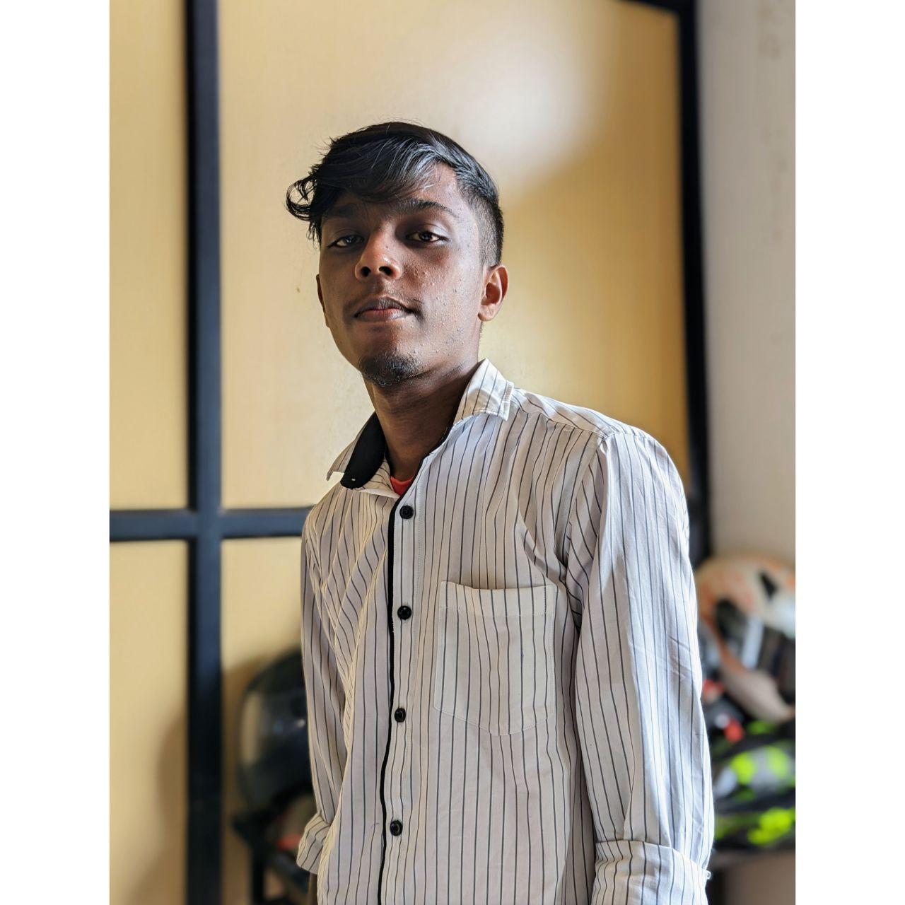

Amal Joy

Summary
Motivated , innovative and hardworking web developer with programming experience and desire to partner with a technology startup with opportunities for long-term growth. Knowledgeable programmer seeking opportunities in software development and cretive solutions design.
Education
- Btech in Computer Science and Engineering-KTU University(2019-2023)
- 12th Science-TKM Higher Secondary School(2017-2019)
- 10th-Auxilium ICSE School
Technical Skills
- HTML 5
- CSS
- JavaScript
- My SQL
- Core Java
- Git
Personal Details
Contact Me